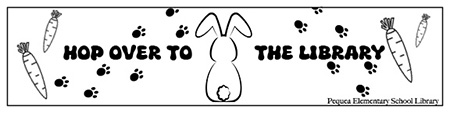

E-portfolio of Alisa Hoverter | |
|
Student at Millersville Universty This project was to design a bookmark for an elementry school library, Pequea Elementary School. My inspiration for this project was to incorporate an animal that is well know to a young audience with the theme of the library being nature. I used a phrase that is easy to understand and makes kids interested in the library to read. I used a simple design for the printing process and engaging to pick up to use while checking out books. |
 |
|
©:2023 Alisa L. Hoverter | |